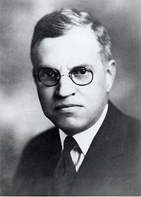

The Old Faithful Inn is a National Historic Landmark, honored as the inspiration for a rustic style of architecture popular throughout the western United States. The rustic style is sometimes considered a branch of the Arts and Crafts movement, which emphasized fine, hand-hewn details and harmony with the surrounding environment. It became so popular at western National Parks that it is sometimes referred to "parkitecture". At the Old Faithful Inn, the pitched roof is covered in yard-long redwood shingles; the roof shape echoes the shape of surrounding mountains. Inside, a spectacular, six-story lobby features native lodgepole pine balconies, and it is anchored by a 500-ton rhyolite chimney and fireplace. Reamer carefully placed windows to mimic light filtering through a canopy of pine trees. Furniture was provided by the Old Hickory Furniture Company of Indiana, whose 100-year-old dining room chairs are still in use today.
The Old Faithful Inn replaced the Upper Geyser Basin Hotel, also known as the "Shack Hotel", which had burned down. The Northern Pacific Railroad, in the form of the Yellowstone Park Association operating company, was required by the terms of its concession to build a new hotel no closer than 1/8 mile of Old Faithful, a stipulation the Yellowstone Park Association observed to the letter. An initial design was prepared by architect A.W. Spalding in 1898, producing a design typical of the time, a turreted Queen Anne style hotel. The design was approved by the Park Service, but construction never started. Child instead hired Reamer to design a much more radical building with antecedents in the rustic camps of the Adirondacks. Design work took place in 1902, and construction started in 1903, with work continuing through the winter to open in 1904. The original cost of the Inn was about $140,000, using materials gathered from within the park. The hotel was furnished for another $25,000. Most of the logs came from a location about 8 miles (13 km) south of Old Faithful, where a temporary sawmill produced boards as needed. Stone came from the Black Sand Basin and from a site along the road to Craig Pass about five miles to the east. The unusually-shaped log brackets were collected from the surrounding forests.
The Inn has been expanded and modified several times. In 1913 the East Wing was added to the 120-room original structure, and in 1922 the dining room was enlarged. In 1927-1928 the West Wing was built, and the front of the main building extended. All of these modifications were carried out under the supervision of the original architect, Robert Reamer. A 1927 addition to the dining room has since become home to the Bear Pit Lounge. Installed in 1936 just off the lobby, the first Bear Pit featured carved and inlaid wood panels with humorous scenes involving bears, created at Reamer's suggestion. When the lounge was converted to a coffee shop, the lounge was relocated to the dining room extension and the panels were replicated in etched glass in 1988. Some of the original panels remain in the snack bar. In 1940 the interior logs were peeled, revealing patterns created by bark beetles, and in 1966 the logs were cleaned and varnished. An automatic fire sprinkler system was added in 1948, together with fire doors in the wings.
Some of the original furnishings remain, while care has been taken with newer pieces to remain compatible with the rustic design. Some furniture at the Old Faithful Inn was salvaged from the Canyon Hotel before it was demolished. particularly the Limbert chairs in the dining room extension and some of the reading desks on the balcony.
The facility was closed for the duration of the Second World War (along with all other hotels in the park) and the park was unprepared for the huge number of visitors in 1946.
On August 17, 1959 the Old Faithful Inn was shaken by the 1959 Hebgen Lake earthquake which collapsed the dining room fireplace chimney and damaged the huge lobby fireplace, reducing the number of usable hearths from eight to two. The building was partially shaken loose from its foundations, and access to some of the upper levels had to be restricted due to safety concerns. There were no deaths or serious injuries at the Inn as a result of the earthquake. The dining room fireplace was finally rebuilt in 1985, but the outside portion of the lobby fireplace chimney was replaced with a single steel pipe, visible in many exterior photos.
In 1988, the inn was seriously threatened by the North Fork Fire, but was saved by the actions of firefighters, volunteers, and a sprinkler system which was installed on the roof the previous year.
The high-range rooms in the East and West wing additions were renovated in 1993 and 1994. In celebration of the Inn's centennial in 2004, a major multi-million dollar renovation project of the original "Old House" started construction with the help of A&E Architects of Missoula, Montana. The project was broken into 3 construction phases with the final phase scheduled for completion in June 2008. When finished, the building will meet current building codes and will have a complete infrastructure upgrade including new electrical, plumbing, and heating systems as well as major structural upgrades. In addition to the replacement of the systems of the building, finishes will be cleaned and restored while maintaining as much of the historic material as possible. Wood and wool floor finishes, bathroom tile and fixtures, new replica historic hardware, and an interpretation of the original lavatory stands and basins by Charles Limbert will be installed. Original elements including the recessing of the floor and hearth of the large fireplace in the main lobby and reconstruction of log walls removed in the lobby will correct multiple modifications and changes over the years and bring the Inn back to match more closely Reamer's original design. Great care and sensitivity has been taken to integrate systems and restore and install original and new finishes to maintain the appearance and layout of the Inn during the period immediately after it opened its doors in 1904.

Twenty-nine year old architect Robert Reamer was hired by the Yellowstone Park Association in 1902 to design a lodge for the Old Faithful area. The siting of the inn was ingenious, skewed in relationship to the entry drive to allow an unobstructed view of Old Faithful for the approaching visitor. The building was constructed in three major phases: the 1903 original section with the prominent gable roof, dining rooms, and kitchen wing to the south, and guest-room wings to the east and west; the 1913-1914 east wing; and the 1927 west wing. The foundation of the 1903 portion is stone and concrete with a stone veneer. The first-floor structure contains load bearing log walls and log framing. Upper stories are of milled lumber and log framing; exteriors are sheathed in yard-long redwood shingles with the two lower courses sawn into diamond patterns.
Initial construction was carried out over the winter of 1903–1904, largely using locally obtained materials including lodgepole pine and rhyolite stone. When the Old Faithful Inn first opened in the spring of 1904, it boasted electric lights and steam heat. The structure is the largest log hotel in the world; possibly even the largest log building in the world. In 2007 the American Institute of Architects conducted a survey to determine the 150 favorite buildings in America; the Old Faithful Inn ranked 36. The Inn, which was designated a National Historic Landmark in 1987, is itself part of the Old Faithful Historic District. Old Faithful Inn is a member of Historic Hotels of America, the official program of the National Trust for Historic Preservation.


{kind=link}
{kind=link}
{kind=link}
{kind=link}
{kind=link}
{kind=link}
{kind=link}
{kind=link}
{kind=link}